ارشدني
السياحة في الاردن وأهم 10 من مُدنها ومعالمها السياحية
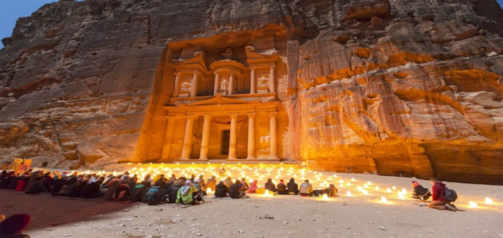
تُعتبر الأردن ملاذًا آمنًا للسياحة حيث انها من الوجهات السياحية المُستقرة في المنطقة. تزخر الاردن بمجموعة من المزارات والأماكن السياحية ضمن مواقع التراث العالمي لليونيسكو ،ومنها الآثار النبطية القديمة المنحوتة في البتراء. هذا بالإضافة المناظر الطبيعية الصحراوية المُلهمة. إليك في هذا المقال كل ما تود معرفته عن السياحة في الاردن أرض الأنبياء واهم مُدنها ومعالمها السياحية…
يعود تاريخ الأردن إلى آلاف السنين حيث عصور البشر الأوائل “تُشير النتائج والأبحاث الأثرية أن تاريخ الأردن يرجع حتى عصر إنسان النياندرتال ! “. كذلك يضم الأردنن مُدن رومانية و عُثمانية ، وكذلك كنوز فارسية وآثار مصرية من السُلالات التي اختفت منذ فترة طويلة.
اكتشف السياحة في الاردن
الأردن ليس وجهة سياحية مقوماتها تاريخية فقط ، بل تتميز السياحة في الاردن بشوارع حية من العقبة على البحر الأحمر للغوص على مستوى عالمي ، أو حتى في وسط العاصمة عمان حيث الحياة الليلية المُزدهرة والفن الحديث.
يمتاز الأردن بتنوع المزارات السياحية ، حيث المواقع الأثرية ، العلاجية ، الترفيهية ، الدينية والثقافية. كما يوجد في الاردن ما يزيد عن 3 الآف فندق، من فئة الـ 5 نجوم. فبإمكانك الإقامة في إحدى فنادق الاردن ، بما يتناسب مع ميزانيتك الخاصة.يمتاز الأردن بتنوع المزارات السياحية ، حيث المواقع الأثرية ، العلاجية ، الترفيهية ، الدينية والثقافية. كما يوجد في الاردن ما يزيد عن 3 الآف فندق، من فئة الـ 5 نجوم. فبإمكانك الإقامة في إحدى فنادق الاردن ، بما يتناسب مع ميزانيتك الخاصة.
بالإضافة إلى كل ما سبق ، يتمتع الاردن بتنوع تضاريسه، وذلك حيث يُعتبر حلقة الوصل بين قارة آسيا وأفريقيا وأوروبا. وكما يقصد الأردن آلآف السائحين سنويًا بغرص الترفيه والسياحة، فهناك أيضًا الكثير يقصدون السياحة في الاردن بغرف الإستشفاء. وذلك حيث تعتمد السياحة العلاجية الاستشفائية بالأردن على العناصر الطبيعية في علاج المرضى. وذلك مثل ينابيع المياه المعدنية أو الكبريتية في البحر الميت ، حمامات ماعين، والتعرض لأشعة الشمس. بالإضافة إلى رماله الصحراوية التي يقصدها الكثيرين بغرض الإستشفاء من بعض العديد من الأمراض الجلدية ، الروماتيزم وأمراض العظام وغيرها.
افضل وقت للسفر الي الاردن
أفضل وقت للسفر إلى الأردن هو فصل الربيع ، حيث الفترة ما بين شهري (مارس-مايو). ويرجع السبب في ذلك لإعتدال المناخ ، حيث تكون درجات الحرارة لطيفة ، والزهور البرية تنتشر في كل مكان حتى الصحراء. وبالرغم من المميزات العديدة للسفر في فصل الربيع، إلا أم العائق الوحيد في هذه الفترة هي الرياح الصحراوية المعروفة بأسم “رياح الخماسين| والتي تكون مُحملة بالغبار والحصى.
وننصحك بتجنب السياحة في الاردن صيفًا، في الفترة ما بين شهر يونيو إلى سبتمبر. وذلك حيث تصل درجات الحرارة في العاصمة الأردنية أحيانُا إلى 40 درجة مئوية، وفي منطقة البحر الميت والعقبة يمكن أن تصل الحرارة إلى 45 درجة مئوية!. وبالرغم من شدة حرارة الصيف في الاردن ، إلا أنها حرارة جافة ، ويمكنك التقاط بعض النسائم الباردة وسط التلال.
كذلك أبتعد عن السياحة في الاردن شتاءًا ، خاصة في الفترة ما بين ديسمبر إلى فبراير. وذلك حيث يكون الطقس بارد مع رياح شديدة وأمطار غزيرة تصل إلى تساقط الثلوج. فقد تصل درجة البرودة في البتراء إلى 8 درجات مئوية تحت الصفر. أما في وادي رم الطقس يكون أكثر إعتدالًا. بينما تتمتع العقبة بأشعة شمس دافئة.
أما فصل الخريف في الفترة من منتصف سبتمبر حتى منتصف نوفمبر، يكون الطقس مثالي لمُحبي الشواطئ. فيُعد فصل الخريف أيضًا وقتًا مثاليًا للسفر إلى الأدرن، حيث تنخفض درجات الحرارة إلى مستويات أكثر قابلية للسياحة والتجول في البلد.
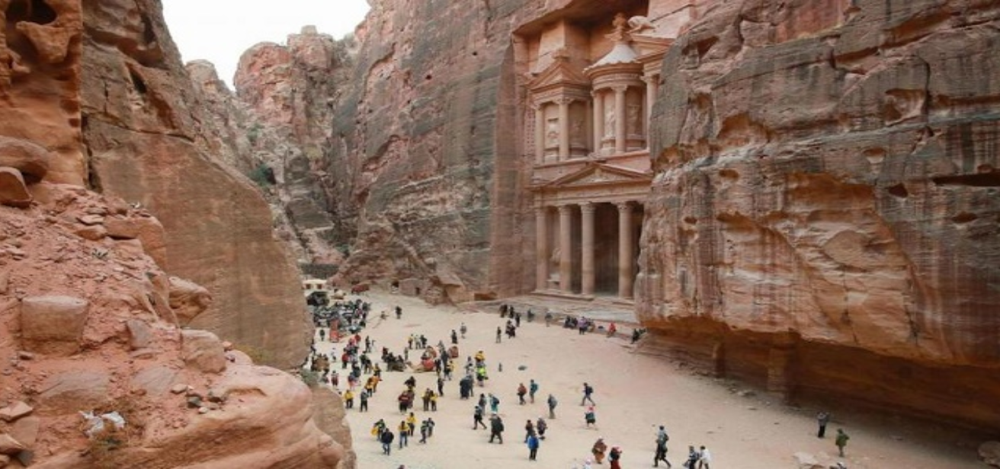
اهم مدن السياحة في الاردن
يصل عدد مُدن الأردن ما يزيد عن 40 مدينة، ولكن ليست جميعها معروفة سياحيًا. فهناك 10 من مدن الاردن السياحية ، هي التي تستحق الزيارة وإدراجها ضمن برنامجك السياحي هناك ، ومنها ما يلي :
السياحة في مدينة عمان
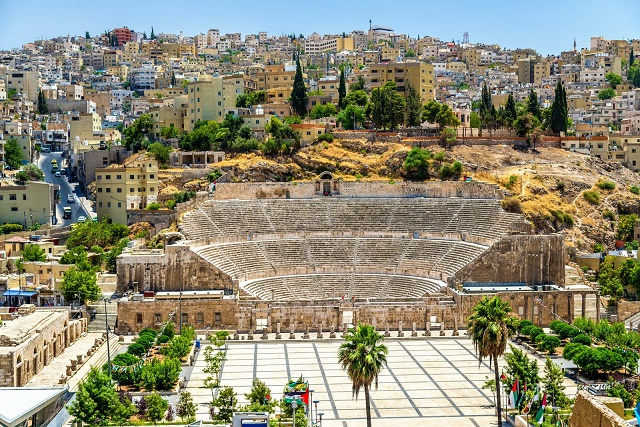
مدينة عمان العاصمة الأردنية ، واحدة من أبرز وأهم المدن السياحية في الأردن. هي مدينة نابضة بالتاريخ العريق ، وتتمتع شوارعها بعبق التاريخ حيث الفسيفساء ومآذن المساجد العريقة وغيرها.
تقع عمّان على سلسلة من التلال الملتوية، وتتمتع بالعديد من المتاحف والمعارض الحديثة. كذلك تشتهر مدينة عمان الأردنية بمأكولاتها الشهية والشهيرة. كل هذا بالإضافة إلى بعض العجائب الطبيعية والاصطناعية الجاذبة للسُياح في منطقة الشرق الأوسط.
أهم معالم مدينة عمان السياحية
السياحة في مدينة البتراء
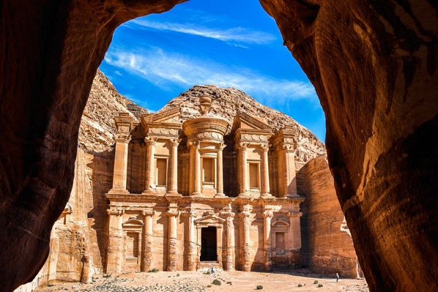
تُسمى البتراء بالمدينة الوردية ، وهي مدينة منحوتة في الصخر بطريقة فريدة وإبداعية ، تجذب إليها السائحين من كل مكان. هي مدينة تاريخية عريقة ، و واحدة من من أبرز المزارات السياحية في الأردن واكثرها شعبية. كذلك قد تم تصنيفها رسمياً كإحدى مواقع التراث العالمي لليونيسكو.
يرجع تاريخ المدينة إلى عام 13 قبل الميلاد ، حيث أنشأها الأنباط، وبالرغم من ذلك تم إكتشافها عام 1812م. تحتاج جولتك في البتراء لإستكشافها يوم واحد، حيث يُمكنك التجول وإستكشافها في مدة تتراوح من 5 : 10 ساعات تقريبًا.
يُفضل عند زيارة البتراء للسياحة،أن تقوم بإرتداء ملابس مُريحة و فضفاضة ، وكذلك أحذية رياضية وقُبعة للحماية من أشعة الشمس. وذلك حيث تتميز مدينة البتراء بمناخ صحراوي حار.
أهم معالم مدينة البتراء السياحية
السياحة في مدينة جرش
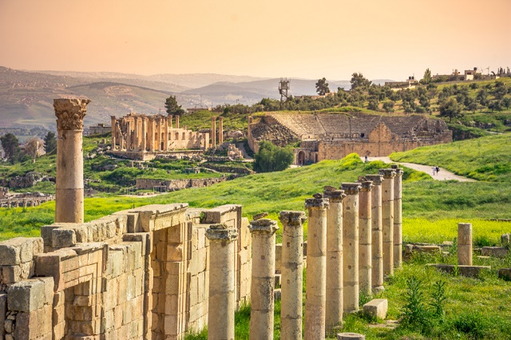
تقع الجرش على بُعد أقل من ساعة بالسيارة من العاصمة عمان. فلا تكتمل عُطلة السياحة في الاردن بدون زيارة محافطة الجرش. هي محافظة تتمتع بمجموعة من الأماكن السياحية و التاريخية الفريدة. كما تتمتع بالعديد من المتنزّهات والغابات الخلابة التي تجذب السائحين.
كما تشتهر محافظة الجرش بأطلالها المحفوظة منذ القرن الأول الميلادي، حيث الأعمدة والساحات والمعابد الفريدة ، والمُدرجات التي تُعتبر من أبرز مزارات المحافظة. بالإضافة إلى ذلك تُعتبر الجرش نقطة إنطلاق مثالية لإستكشاف المحميات الطبيعية القريبة منها.
أهم معالم مدينة جرش السياحية
السياحة في مدينة العقبة
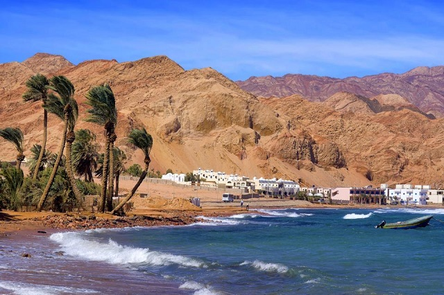
العقبة هي بوابة الأردن إلى البحر الأحمر ، فهي مدينة قديمة مأهولة بالسُكّان ، وذلك منذ عام 4000 ق.م. تتمتع مدينة العقبة ببعض الآثار والمتاحف. بالإضافة إلى المُنتجعات الشاطئية الرائعة، التي تُتيح لزوارها العديد من والأنشطة المائية، مثل رياضة ركوب الأمواج ، رياضة الغطس والغوص وغيرها.
كذلك تتضمن العقبة مواقع غنيّة بالشعاب المرجانية اليمانية، والتي تُعد من أهم عوامل جذب السياحة إليها. علاوة على ذلك يُمكنك القيام بجولة لإستكشاف آثارها القديمة ، والإستمتاع بمشاهدة أشجارها القديمة في شط الغندور. فإن كُنت تنوي قريبًا السياحة في الاردن ، فلا تفوت عليك فرصة إستكشاف العقبة ، وزيارة معالمها السياحية.
أهم معالم مدينة العقبة السياحية
السياحة في مدينة مادبا
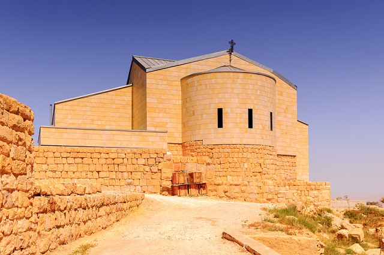
يُمكن العثور على مدينة مادبا القديمة ، مُتشبثة بحافة طريق الملك السريع الشهير الذي ينسج عبر التلال الصحراوية والتاريخية للأردن. تشتهر المدينة بمسجدها المجيد المُذهب بالذهب ، ومجموعة من المآذن ، بالإضافة إلى الفسيفساء القديمة التي يعود تاريخها إلى العصر الأموي.
يوجد بها أعمال فنية بيزنطية عجيبة ، كامنة في الخلجان وكذلك المصليات في كاتدرائية القديس جورج الأرثوذكسية. علاوة على ذلك تتمتع بمجموعة من الآثار الرومانية القديمة التي تتخلل المدينة. ستتمكن أيضا من تذوق المَزّة الأردنية المُعبأة بالتوابل التي تشتهر بها الأردن.
أهم معالم مدينة مادبا السياحية
السياحة في قرية وادي رم
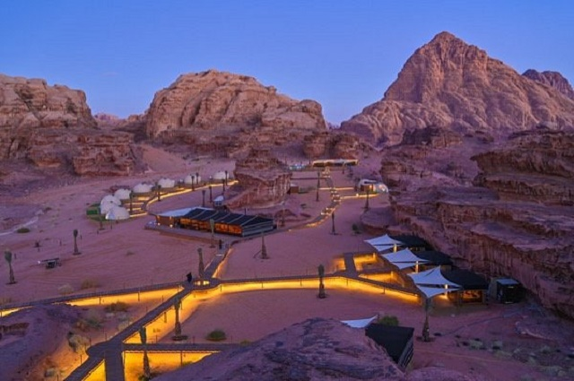
الشمس العربية المتوهجة البرتقالي ، والوصول لالتقاط الأنفاس من وادي رم في جنوب الأردن هي بالتأكيد واحدة من عجائب الطبيعة الأروع في المنطقة. وادي رم منطقة منحوتة من الحجر الجيري الصخري ، ترتفع وتنخفض بشكل كبير على الأطراف الشرقية من العقبة.
يُطلق عليه وادي القمر ، ويشتهر برماله الحمراء والوردية ، والجبال المُذهلة، ونقوش صخور تعود إلى عصور ما قبل التاريخ. يبعد وادي رام أقل من أربع ساعات بالسيارة من العاصمة عمان ، وأقل من حوالي ساعتين بالسيارة من البتراء. تتمتع المنطقة بالعديد من المعالم السياحية الشهيرة، التي تجذب السائحين إليها ومنها ما يلي.
أهم معالم وادي رم السياحية
السياحة في مدينة عجلون
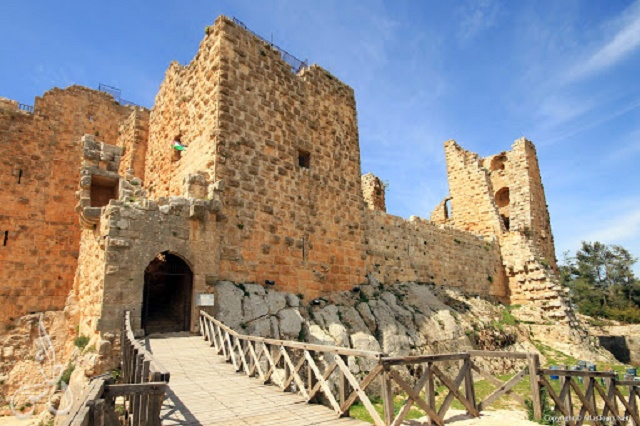
تُهيمن مدينة عجلون التاريخية على التلال الخضراء والمموجة في شمال الأردن، وهي الآن مُجرد مجموعة كبيرة من القرى والنجوع الفردية. كل هذه المُستوطنات الصغيرة مُلتصقة معًا ، بإرتفاعات قلعة عجلون الشهيرة، مما يجذب إليها الكثير من السائحين. تُعرف مدينة عجلون منذ أقدم العصور تحديدًا العصر الروماني. تتمتع عجلون بأهمية تاريخية ، وذلك بسبب موقعها المُتميز وسط جبال الأردن ناحية الشمال.
تقع مدينة عجلون على بُعد حوالي 74 كيلو متر. وهي مدينة من أكبر مدن السياحة في الأردن ، وكذلك من حيث المساحة ، فهي تشمل ما يقرُب من 27 قرية. يرجع سبب تسميتها بهذا الإسم إلى أصل كلمة آرامي ، ذلك الأسم الذي يُطلق على كبير ملوك مدينة مؤاب ، وهو كان يحكم هذه المنطقة لفترة معينة قديمًا.
أهم معالم مدينة عجلون السياحية
السياحة في مدينة إربد
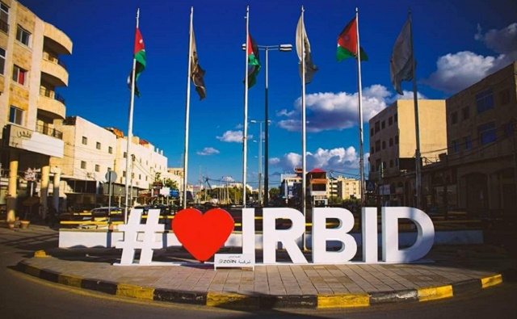
إذا كُنت تُخطط لبرنامجك للسفر و السياحة في الاردن ، فيجب أن يكون ضمن برنامجك السياحى خُطة لزيارة مدينة إربد. ازدهرت إربد بفضل جامعتها المرموقة “جامعة اليرموك” ، ومجموعة كاملة من مرافق التعليم العالي الأخرى المعروفة. كما أن السياحة في اربد تُعتبر من أبرز الوجهات السياحية في الأردن ، فهي تتمتع بمجموعة من المزارات السياحية الأثرية ، كالمتاحف والآثار الرومانية والتاريخية المختلفة.
علاوة على ذلك تتمتع اربد بالعديد من المقومات السياحية الطبيعية، حيث الجبال ، المساحات الخضراء والمنتزهات وطبيعتها الخلابة. ومن أبرز الأنشطة السياحية التي تجذب السائحين لزيارة مدينة اربد ، رياضة تسلق الجبال. كذلك تتمتع المدينة بالعديد من مولات التسوق والفنادق ، بالإضافة إلى شوارعها النابضة بالحياة. كل ذلك جعل من مدينة إربد ، مدينة سياحية هامة في الأردن.
أهم معالم مدينة إربد السياحية
السياحة في مدينة الزرقاء
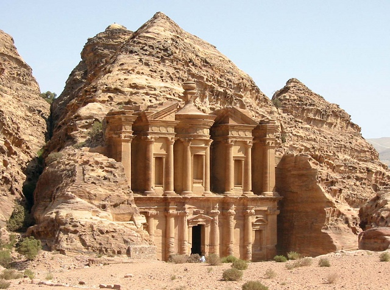
محافظة الزرقاء واحدة من مدن الاردن السياحية الهامة. فعند السفر إلى الأردن بغرض السياحة، لا تفوت عليك فرصة إستكشافها. هي مدينة سياحية تضم مجموعة من المعالم الأثرية التي تستحق الزيارة. تنقسم المحافظة الى 3 مناطق رئيسية هامة وهي :
تعتبر مدينة الزرقاء كنز غني بالاماكن السياحية المُتنوعة. وذلك حيث تجد أن هذه المدينه بها حوالى 500 موقع أثرى شهير وبارز فى المدينة. ترتفع الزرقاء عن سطح البحر بمسافة مقدارها 650 م تقريبًا. فيما يلي أبرز المزارات السياحية في الزرقاء.
السياحة في مدينة معان
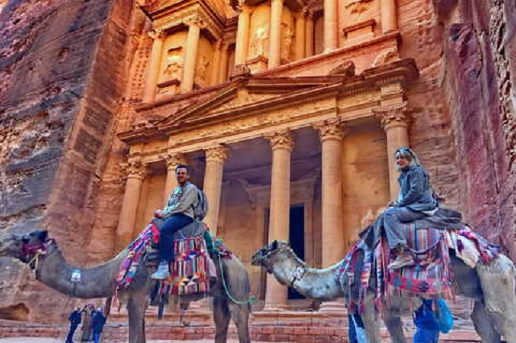
تُعد محافظة معان محطة توقف جيدة ضمن المناطق الجنوبية الشهيرة الأردن. هي وجهة من وجهات السياحة في الاردن المثالية للمسافرين ، خاصة الذين يشقون طريقهم إلى مصر والبحر الأحمر. وبالرغم من صغر حجمها، إلا أنها تتميز عن باقي المدن السياحية الأردنية الكبيرة والشهيرة.
تضم محافظة معام العديد من المعالم التاريخية والأثرية القديمة ، وهي مزارات ذات طابع خاص تجذب إليها الكثير من السائحين. يُعتقد أن هذه المدينة تعود إلى زمن النبطيين، ومن ثم شكلت معان موقعًا أماميًا بعيدًا عن البتراء والعاصمة عمّان.
أهم معالم مدينة معان السياحية
إلى هُنا نكون قد وصلنا لنهاية مقالتنا، ونتمنى لك عُطلة سياحية مُمتعة ،،،